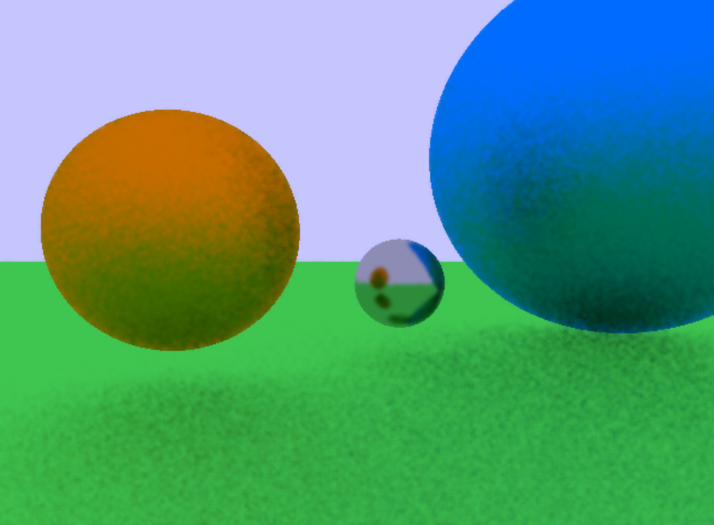
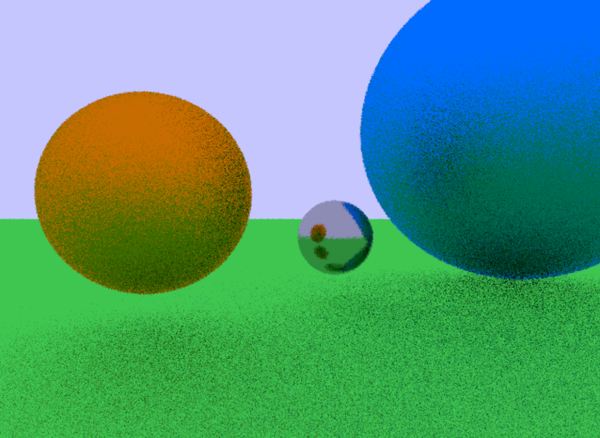
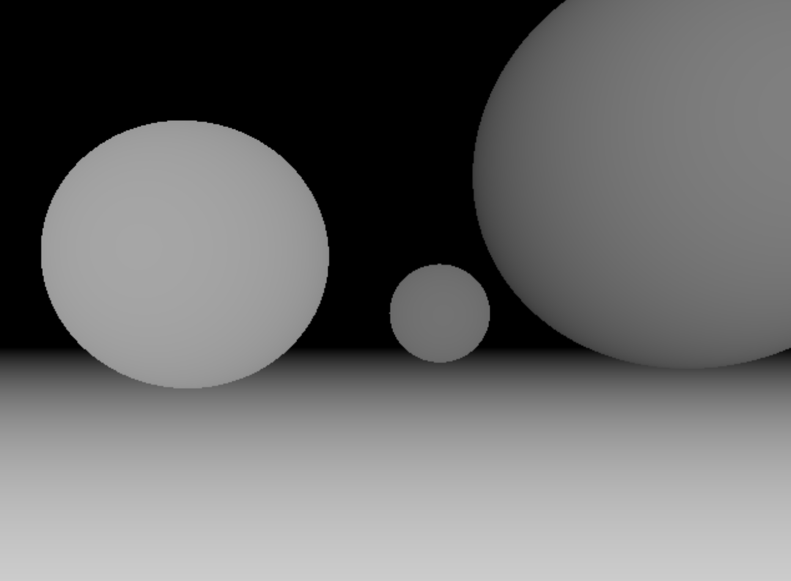
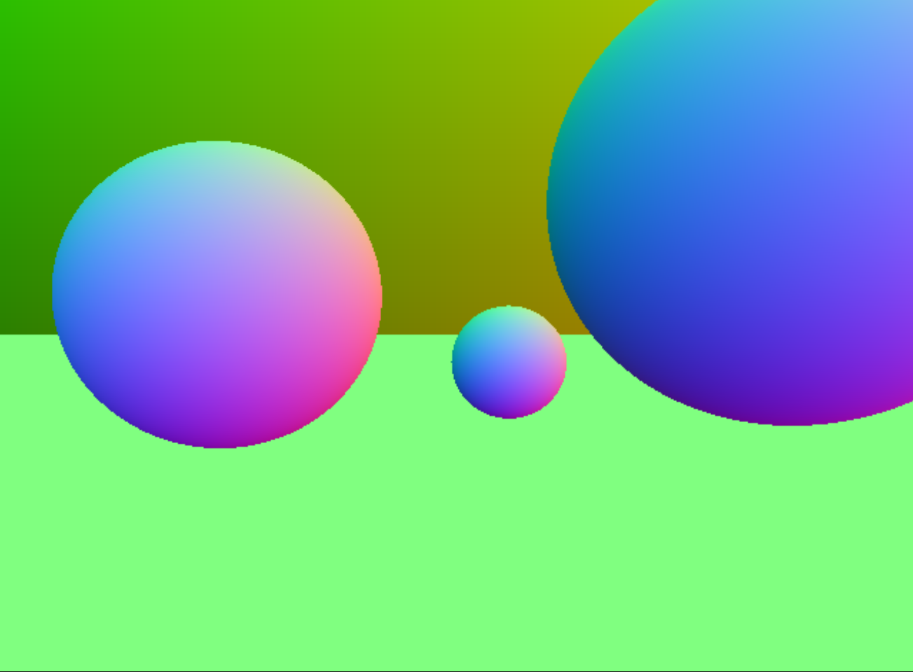
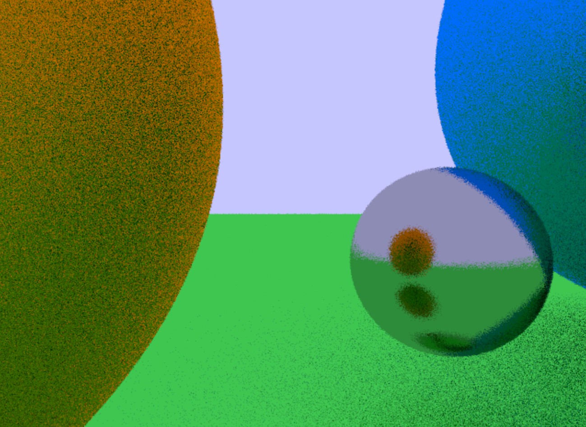

Project Description
Ray tracing is an advanced rendering technique that involves casting rays in a scene and detecting the light as the ray bounces off objects in the scene. This allows for realistic images to be produced because it more accurately models how light interacts with objects in the real world.
This is a computationally expensive problem - at least one ray is cast per pixel and sequentially computing the light returned for each ray takes a significant amount of time. This is amplified when multiple rays must be cast per pixel for more realistic looking images.
Our aim with this project was to create a ray tracer using compute shaders. Each ray is independent of other rays being sent and can therefore be computed in any order. We assigned groups of pixels to each group in the shader - the amount per group dependent on the resolution of the screen.
Details
For each pixel, we dispatch a shader invocation to cast a ray into the scene and calculate the color. This ray will test to every object in the scene to see what is the closest hit in its path. The ray then bounces off the closest object and keeps doing so until it hits nothing or reaches a maximum recursive depth. After tracing each pixel, we store color, depth, and normal information in textures that are used to render the various modes.
Four different modes were implemented: a denoising mode, low sample mode, depth mode, and normal mode. These can be switched between using the m key. The primary mode, denoising, is calculated by taking a weighted average for each pixel with its neighboring pixels. The weight for each of the neighbors is determined by how close the normal, depth, and luminence is to the current pixel.
A display of the various modes can be viewed below.
Denoise Mode
 Denoised image (as described above)Low Sample Mode
 A low sample ray trace of the sceneDepth Mode
 Visualization of the depth-bufferNormal Mode
 Visualization of the normal-bufferWe also implemented the ability to navigate the virtual world using the WASD keys to move forward, left, backwards, and right respectively. A scene where the user has moved from the original start position can be viewed below.
 Navigation of the scene is possible using the WASD keys